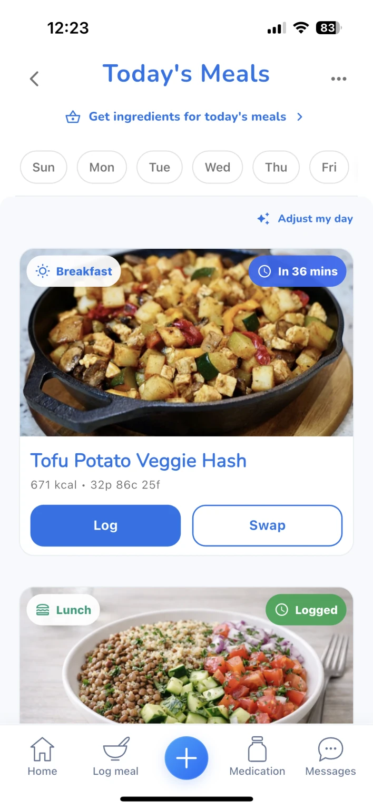
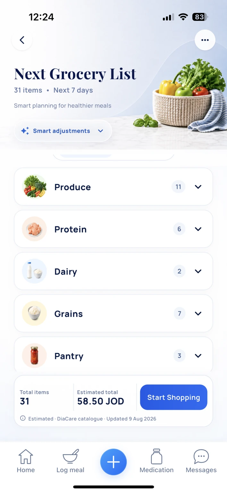

Project report · Application engineering
DiaCare
Meal Planning, Logging
& Grocery Workflows
From plans to daily actions.
Technologies Flutter · Dart · Firebase · Cloud Functions
Project overview
I developed the Flutter interfaces, shared meal-log data layer, and photo-analysis workflow that connect planning a meal to recording what someone actually ate. The work described here spans meal selection, logging, portion handling, and grocery preparation.
DiaCare also includes medication tracking and professional messaging; this report focuses on the meal-planning, logging, and grocery workflows.
How I built it
- Connect planning and logging. Build Flutter screens for browsing meals, reviewing nutrition details, logging a planned meal, and swapping a choice. Manual logging and the planner use a shared meal-log repository.
- Carry the plan into preparation. Connect the meal plan to a grocery list organised by food category, with an estimated total shown separately from a confirmed purchase price.
- Keep photo suggestions editable. Ask for consent before sending a food photo for analysis, then let the user confirm foods and portions before logging. Search and manual entry provide alternative paths.
Engineering decisions
The planner and manual logger use the same data layer, keeping meal entries consistent across both workflows. Nutrients are calculated from base values and portion size, preventing repeated edits from compounding the calculation. Missing optional nutrients stay distinct from zero so unavailable information is not treated as a measured absence.
Photo analysis has one time budget across its stages, so a stalled step cannot leave the interface waiting indefinitely. Cancellation stops the interface waiting, although the remote request may continue. Normal sign-out preserves local data for the returning account and stops private reminders; switching to a different account clears account-scoped caches and rejects the previous account’s identity. Device preferences such as language can remain.
Implementation & verification
The implemented flow connects meal choices to logging and grocery preparation. These are actual app interfaces with example data.


Figure 1. Meal plan
Review a meal, log it, or swap it. Select the screenshot to enlarge.


Figure 2. Grocery preparation
Organised ingredients with an estimated catalogue total.
A focused local run passed 22 tests covering cancellation and late errors, stalled analysis and shared deadlines, portion conversions, and account cleanup and identity ownership. The public technical evidence note describes the checks, implementation boundaries, and verification status without exposing production code.
Scope & next steps
Screens show example data. Food suggestions and portions require confirmation, prices are estimates, and available features may vary by release or enrolment. Measured user outcomes and food-recognition accuracy have not yet been established in this case study.
Takeaway & next step. The difficult part is making a plan, a log, and a grocery list behave as one coherent experience when users edit entries or a request fails. Next, I would evaluate those complete tasks with users and measure completion and recovery behaviour before making usability claims.
Evidence: implementation & test summary · product website.